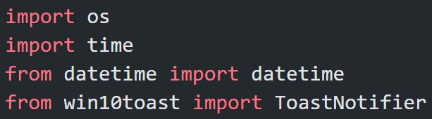
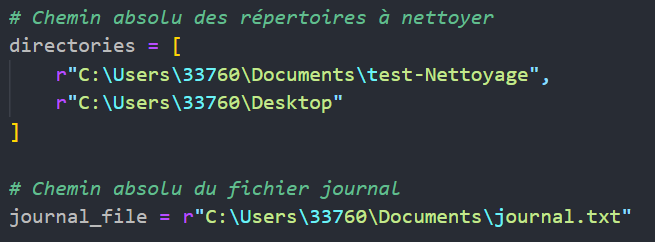
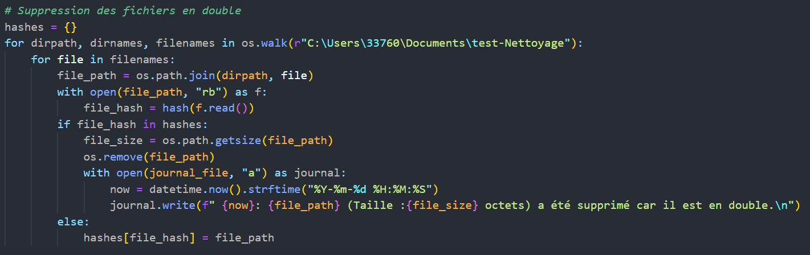
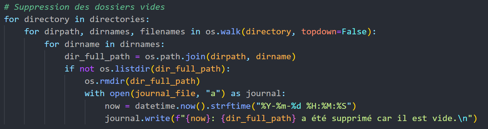
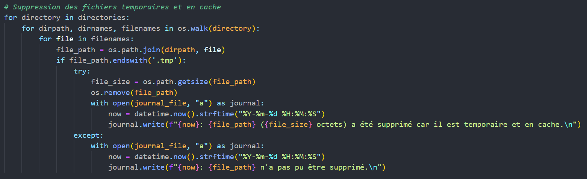
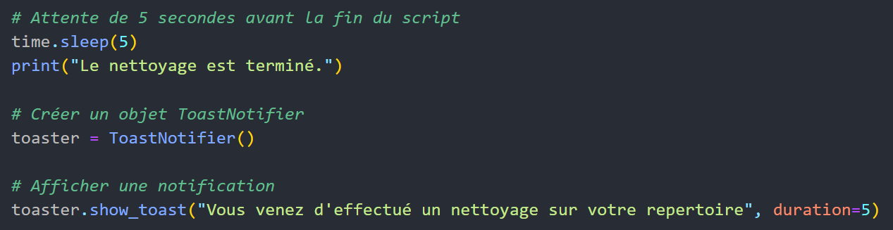

NEAT
Nettoyez votre PC en un clic Télécharger
NEAT est un logiciel Open Source codé en Python,
l'outil représente un moyen de nettoyage de
fichiers et de dossiers inutiles sur un ordinateur
sous les différents systèmes d’exploitation :
Windows / Linux / MacOS.
Il effectue un nettoyage pour certains répertoires
en supprimant les fichiers en double, les dossiers vides
et les fichiers temporaires et en cache. Il est simple
à utiliser et peut aider les utilisateurs à gagner de
l'espace de stockage sur leur ordinateur en supprimant
les fichiers inutiles.
Son script est facilement personnalisable grâce à la liste
des répertoires à nettoyer qu’on peut choisir et ajouter
en ajoutant juste son chemin d’emplacement.
De plus, il affiche une notification via la bibliothèque
ToastNotifier de Python pour informer l'utilisateur
que le nettoyage a été effectué avec succès.
En somme, cet outil est un moyen simple et efficace
de nettoyer les fichiers inutiles de votre ordinateur,
ce qui peut contribuer à améliorer les performances de votre système.
Soyez efficace et organisé grâce à notre outil de nettoyage puissant et rapide.

NEAT
est nettoyage de fichiers et de dossiers basé sur un code qui vise à libérer de l'espace disque en supprimant les fichiers inutiles. Le script est écrit en Python et utilise plusieurs modules Python pour effectuer diverses tâches.
Le script commence par importer plusieurs modules Python, notamment le module os pour travailler avec le système de fichiers, le module time pour faire une pause dans l'exécution du script, le module datetime pour formater la date et l'heure, et le module win10toast pour Windows et subprocess pour MacOs (ce qui est différent sur Linux) pour afficher une notification à l'utilisateur à la fin du script.

Le code définit également plusieurs variables pour le chemin absolu des répertoires à nettoyer et le chemin absolu du fichier journal où les actions effectuées par le script sont enregistrées.

Le script commence par supprimant les fichiers en double en utilisant un dictionnaire pour stocker les hachages des fichiers. Le script parcourt ensuite chaque fichier dans les répertoires spécifiés, calcule son hachage et vérifie si ce hachage a déjà été rencontré. Si un hachage de fichier est en double, le script supprime le fichier et enregistre l'action dans le fichier journal. Dans le cas contraire, le hachage du fichier est ajouté au dictionnaire.

Le script supprime ensuite les dossiers vides dans les répertoires spécifiés. Pour cela, il parcourt chaque répertoire et vérifie si le répertoire est vide. Si tel est le cas, le script supprime le répertoire et enregistre l'action dans le fichier journal.

Enfin, le script supprime les fichiers temporaires et en cache en parcourant chaque fichier dans les répertoires spécifiés et en vérifiant si le fichier se termine par .tmp. Si c'est le cas, le script supprime le fichier et enregistre l'action dans le journal. Si le fichier ne peut pas être supprimé, une entrée d'erreur est enregistrée dans le journal.

Le script se termine en affichant un message de fin de nettoyage et en affichant une notification à l'utilisateur à l'aide du module win10toast pour Windows, subprocess pour MacOs et un simple print pour Linux.

Il est important de noter que le script doit être exécuté avec des autorisations d'administrateur pour supprimer des fichiers et des dossiers. Il est également important de noter que le script supprimera des fichiers et des dossiers de manière permanente, il est donc recommandé de sauvegarder les fichiers importants avant d'exécuter le script.
L'outil de nettoyage de répertoires est un excellent moyen de maintenir un espace de travail propre et organisé. Cependant, comme avec tout logiciel, les utilisateurs peuvent rencontrer des problèmes lors de l'exécution de ce script. Voici quelques problèmes courants et les solutions pour les résoudre.
Le premier problème courant est que le l’outil ne supprime pas certains fichiers temporaires ou en cache. Si le script ne parvient pas à supprimer ces fichiers, cela peut entraîner un désordre dans l'espace de travail. Pour résoudre ce problème, vous pouvez d'abord vérifier que les fichiers en question sont bien des fichiers temporaires ou en cache. Si tel est le cas, vous pouvez essayer de fermer les applications qui utilisent ces fichiers avant de relancer le script de nettoyage.
Le deuxième problème courant est lié aux autorisations. Il est possible que le script ne puisse pas supprimer certains fichiers en raison de restrictions d'autorisations. Pour résoudre ce problème, vous pouvez utiliser l’outil en tant qu'administrateur ou vous assurer que vous avez donné les autorisations nécessaires pour supprimer ces fichiers.
Le troisième problème courant est lié à la suppression accidentelle de fichiers importants. Bien que le script soit conçu pour supprimer les fichiers en double et les fichiers temporaires, il est possible que vous puissiez accidentellement supprimer des fichiers importants. Pour éviter cela, vous pouvez créer une liste de fichiers à ne pas supprimer et les exclure du processus de nettoyage.
Enfin, il est important de noter que ce script peut prendre du temps pour s'exécuter, en fonction de la quantité de données à traiter. Il est donc recommandé de ne pas lancer l’outil pendant que vous travaillez sur d'autres tâches, car cela peut ralentir votre système.
Pour utiliser correctement cet outil de nettoyage de répertoires, il est recommandé de suivre les étapes suivantes : Tout d'abord, vous devez spécifier les chemins absolus des répertoires que vous souhaitez nettoyer et que vous soyez sur de vos chemins. Ensuite, vous pouvez lancer l’outil vi son interface. Une fois le l’opération est terminée, vous pouvez vérifier le journal pour voir les fichiers et les dossiers qui ont été supprimés. Il est également recommandé de vérifier régulièrement le journal pour vous assurer que l’outil fonctionne correctement.
En conclusion, cet outil de nettoyage de répertoires est un excellent moyen de maintenir un espace de travail propre et organisé. Bien qu'il puisse y avoir des problèmes courants, en suivant les étapes recommandées et en comprenant les solutions aux problèmes courants, vous pouvez utiliser cet outil efficacement et en toute sécurité.
Développeur Full Stack
Administratrice système et réseaux
Administratrice système et réseaux
Réunis par le projet d'études, unis et inspirés pour créer le meilleur produit possible. Un outil de nettoyage d'explorateur de fichiers en python qui serait accessible à télécharger via notre site (avec trois versions adaptées aux différents systèmes d'exploitation: "Windows, Linux et MacOS"), avec toutes les informations concernant l'outil et une documentation pour éviter les erreurs et les problèmes que l'utilisateur peut rencontrer.